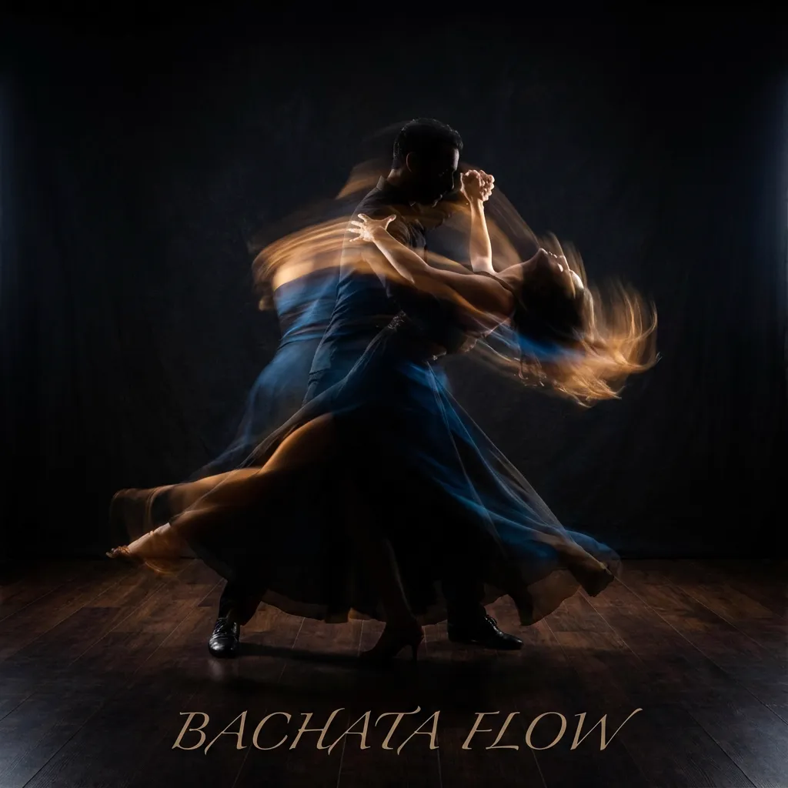

COMMON QUESTIONS
FAQ
Everything you need to know before your first class.
Before your first class
Do I need a partner to join?
No, you do not need a partner! We rotate partners frequently during class. This is the best way to learn how to lead and follow different people, and it is a great way to make new friends. Of course, if you come with a partner and prefer to stay together, that is also allowed.
What should I wear?
Wear comfortable clothing that allows you to move freely. For shoes, we recommend dance shoes or sneakers with a smooth sole that allows you to turn easily. Avoid heavy boots or shoes with too much grip.
Read our full "What to Wear" guide here.
Read our full "What to Wear" guide here.
I have never danced before. Can I join?
Absolutely. The best place to start is Bachata Beginner 0, designed for complete beginners with no partner required. The next course starts the week of September 7. After that, a new Beginner 0 cycle normally begins every January, May, and September. See our beginner Bachata guide and weekly schedule for more details.
Do you teach in English?
Yes! All our classes are taught in English to welcome our international community in Zurich. We also speak German, Italian, Spanish, and Mandarin if you need extra clarification!
Money & logistics
What happens after the free trial?
If you enjoyed the class, you simply continue with the course. Courses run in 8-week blocks, and one course per week costs 220 CHF (185 CHF for students). Your first course sign-up comes with 15% off. You can compare all options on our registration page.
How do I pay for classes?
We accept Twint, cash, bank transfer, and secure card payment. Classes are sold as 8-week course blocks — 220 CHF, or 185 CHF for students. You can see all current options on our registration and prices page.
Is there parking available?
Yes, there are public parking spots available nearby (Blue Zone) and a parking garage at the Letzipark shopping center, which is a short walk away. We are also easily accessible by public transport (Tram 2, Bus 31).
What if I miss a class?
If you miss a class, you can catch it up by attending a similar level class on a different day within the same course period. If you know your absence dates in advance, let us know during registration and we will prorate the cost.
Community & events
What is "Bachata Sensual"?
Bachata Sensual is a style that evolved from traditional Bachata in Spain, created by Korke and Judith. It focuses more on connection and body movements than on footwork. Read more in our Bachata Sensual guide.
Are the teachers certified?
Yes. Our teachers are officially certified Bachata Sensual instructors and podium finishers at the Swiss IDO Championships. Ale and Xidan are also official judges for IDO Switzerland.
Do you host Dominican Bachata events?
Yes! We host intensive training events focusing on traditional style. Check out our upcoming Dominican Bachata Bootcamp in Zurich.
Still deciding? The first class is free.
Book a Free Trial